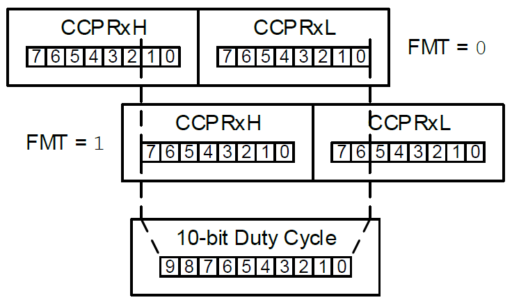

Captura/Comparación/PWM (CCP)¶
El módulo CCP (Capture/Compare/PWM) es un periférico versátil que se encuentra en los µC PIC18F, incluyendo el Q10 (CCP1/2) y Q43 (CCP1/2/3). El nombre se debe a los tres modos en los que opera. Por ahora, nos enfocaremos en el modo PWM (pulse width modulation).
Modo PWM¶
 Antes de nada, recordemos los dos elementos de una señal (cuadrada) PWM. Primero, el periodo es el tiempo que transcurre entre dos flancos ascendentes/descendentes consecutivos de la señal. Segundo, el tiempo de servicio (duty cycle) es el porcentaje de tiempo que la señal está en alto respecto a un período. Eso es todo.
Antes de nada, recordemos los dos elementos de una señal (cuadrada) PWM. Primero, el periodo es el tiempo que transcurre entre dos flancos ascendentes/descendentes consecutivos de la señal. Segundo, el tiempo de servicio (duty cycle) es el porcentaje de tiempo que la señal está en alto respecto a un período. Eso es todo.
Puedes saltearte la explicación del cómo funciona internamente el módulo CCP si quieres y continuar leyendo sobre los elementos de la señal PWM. Empecemos viendo el bloque del modulo TMR2 (timer asociado por defecto al CPPx). Primero, podemos ver que TMR2 (de 8 bits) cuenta hasta que alcanza el valor de PRx (referencia al registro TxPR). Cuando esto sucede (han pasado PRx\(+1\) cuentas), TMR2 se reinicia a cero, manda una señal al 10-bit Latch y activa el flip-flop SR. Así, el 10-bit Latch se actualiza con el valor que representa el registro CCPRx y la señal PWM se mantiene en alto. Luego, cuando TMR2 concatenado a 2 bits generados por \(F_OSC\) (o el prescaler) es igual al valor del 10-bit Latch (han pasado CCPRx cuentas), se da reset al flip-flop SR, lo que hace que la señal PWM se ponga en bajo. Finalmente, el ciclo se repite, generando una señal PWM con un periodo definido por PRx y un duty cycle definido por CCPRx.
Periodo de la señal PWM¶
El periodo de la señal PWM está definido por la cuenta máxima del temporizador TMR2/4/6 de 10 bits asociado al módulo CCPx.
En el Q10, el timer se asocia al módulo CCPx mediante los bits CxTSEL del registro CCPTMRS. En el Q43, mediante los bits CxTSEL del registro CCPTMRS0.
| CxTSEL[1:0] | Timer Asociado |
|---|---|
| 01 | TMR2 |
| 10 | TMR4 |
| 11 | TMR6 |
CCPTMRS vs. CCPTMRS0
El Q10 comparte el registo CCPTMRS entre los módulos CCP1/2 y PWM3/4. En cambio, el Q43 usa el registro CCPTMRS0 solo para los módulos CCP1/2/3. Esto se debe a que:
- El Q43 tiene más módulos CCP
- El Q43 tiene más módulos PWM, cada uno con su propio registro de selección de timer.
Así, un solo registro no es suficiente para configurar todos los módulos CCP y PWM del Q43, mientras que sí lo es para el Q10.
Los timers TMR2/4/6 son de 8 bits, lo que significa que cuentan desde 0 hasta 255.
Para configurar la cuenta máxima, se carga el byte más significativo del valor máximo deseado en el registro TxPR del módulo TMRx.
Por ejemplo, si se carga el valor \(200\), el timer contará desde \(0\) hasta \(200\) antes de reiniciarse, lo que define el periodo de la señal PWM.
En ese tiempo, se realizan \(200+1=201\) cuentas.
De esta forma, el periodo de la señal PWM se puede calcular con la siguiente fórmula:
¿Y el PostScaler?
El PostScaler del TMRx no afecta el periodo de la señal PWM, ya que solo influye en la generación de interrupciones, no en el conteo del timer.
Pero, el modo PWM solo funciona correctamente cuando se usa \(\frac{F_{osc}}{4}\) como fuente de reloj para el timer. Por esto, la fórmula del periodo de la señal PWM se convierte en4:
Sin embargo, normalmente, la variable a hallar es TxPR, no el periodo de la señal PWM:
Duty cycle de la señal PWM¶

El tiempo en que la señal PWM está activa se define por el valor que representa el registro CCPRx, conformado por CCPRxH y CCPRxL.
Además, el bit FMT del registro CCPxCON define si el 10-bit Duty Cycle toma los 10 bits más significativos (FMT = 1) o los 10 bits menos significativos (FMT = 0) del registro CCPRxH:L.
Por lo tanto, la duración en activo de la señal PWM es:
En concordancia con lo explicado sobre el bit FMT, CCPRx value = CCPRxH[1:0]:CCPRxL para FMT = 0 y CCPRx value = CCPRxH:CCPRxL[7:6] para FMT = 1.
Además, para el caso de que se use \(\frac{F_{osc}}{4}\) como fuente de reloj para el timer, la duración en activo de la señal PWM será5:
Pero, normalmente, sabes el tiempo en activo que quieres generar. Así que, puedes despejar el valor de CCPRx:
Pasos para configurar el modo PWM: Forma segura¶
Como guía práctica, Microchip recomienda seguir los siguientes pasos para generar una señal PWM como salida en un pin6:
-
Selecciona el timer a usar (TMR2/4/6) usando el registro
CCPTMRS.Ejemplo: Selección del timer asociado al CCPx
Para el Q10: Si quieres usar el TMR2 en el
CCP1:Para el Q43: Si quieres usar el TMR2 en el
CCP1: -
Asigna el CCPn al puerto Rxy usando el registro RxyPPS. Los puertos destino dependen del µC. Tabla para el Q10:
PPS output selection codes for CCP peripherals (Q10)7 RxyPPS Fuente de salida del pin Rxy Puerto al que se puede dirigir la salida 0x05 CCP1 RB RC 0x06 CCP2 RB RC PPS en el Q43
PPS output selection codes for CCP peripherals (Q43)8 RxyPPS Fuente de salida del pin Rxy Puerto al que se puede dirigir la salida 0x15 CCP1 RC RF 0x16 CCP2 RF RF 0x17 CCP3 RB RD Y, como medida de seguridad (pueden generarse "pulsos basura" mientras se configura el módulo), activa el pin como entrada (TRIS = 1).
Ejemplo: Configuración del PPS
Para el Q10: Si quieres usar el CCP1, veo en la tabla qué puertos puedo usar (RB o RC)7. Usaré el pin RC0:
Todos los registros RBxPPS y RCxPPS del Q10 están en el banco 14. -
Carga el registro
TxPRcon el valor que define el periodo de la señal PWM.Ejemplo: Configuración del periodo PWM
Para el Q10: Si quieres generar una señal PWM de 5 kHz (\(T_{PWM} = 200\ \mu s\)) usando el TMR2 (prescaler de 1:1, \(\text{clk input} = \frac{F_{osc}}{4}\)) y con \(F_{osc} = 4\ MHz\), puedes usar la fórmula para calcular el valor de
TxPR:\[TxPR = \frac{T_{PWM} \times F_{osc}}{4 \times TMRx\text{ Prescaler}} - 1 = \frac{200\ \mu s \times 4\ MHz}{4 \times 1} - 1 = 199\]TxPR está asociado al timer TMR2/4/6, no al módulo CCPx
-
Configura el registro
CCPxCONen modo PWM (MODE=11xx) y la justificación que desees (FMT = 1si es izquierda) paraCCPRx.CCP Control Register (CCPxCON)9 Bit 7 6 5 4 3:0 Campo EN — OUT FMT MODE[3:0] Permisos R/W — RO R/W R/W Reset 0 — x 0 0000 Configurar
CCPxCON.MODEPara el Q10: Al configurar el modo PWM, aprovecha en configurar el formato justificado a la izquierda (
Obviamente, si deseas el formato justificado a la derecha, solo reemplaza el valorFMT = 1) si así lo deseas:0x9Cpor0x8C(0000 1100). -
Configura el registro
CCPRxHyCCPRxLcon el valor que define el duty cycle de la señal PWM.Ejemplo: Configurar
CCPRxPara el Q10: Con las condiciones que se mencionaron en los anteriores ejemplos, si deseas un duty cycle del 25% (50 us), puedes usar la fórmula para calcular el valor de
CCPRx:\[CCPRx\text{ value} = \frac{T_{ON} \times F_{osc}}{TMRx\text{ prescaler}} = \frac{50\ \mu s \times 4\ MHz}{1} = 200 = 0011\ 0010\ 00_{(2)}\]He separado el valor de
CCPRxen 10 bits para mostrar cómo se asignan los bits aCCPRxHyCCPRxLcon el formato justificado a la izquierda (FMT = 1):En cambio, si el formato es justificado a la derecha (; Duty cycle = 25% (justificado a la izquierda) movlw 0x32 movwf CCPR1H, a clrf CCPR1L, a ; CCPR1 = 200 = 0011 0010 00FMT = 0), el valor deCCPRxseguiría siendo el mismo, pero interpretado como \(200 = 00\ 1100\ 1000_{(2)}\). O sea,CCPRxH = 0yCCPRxL = 0xC8. -
Terminar la configuración del TMRx.
- Baja la bandera TMRxIF en el registro PIR4.
- Selecciona \(F_{osc}/4\) como fuente de reloj del TMRx asignando
TxCLKCON=1.
Peripheral Interrupt Request Register 4 (PIR4): TMR2/4/610 Bit 5 3 1 Campo TMR6IF TMR4IF TMR2IF Permisos R/W R/W R/W Reset 0 0 0 - Configura el PreScaler del TMRx en los bits
CKPSdel registroTxCON. - Habilito el timer activando el bit
ONdel registroTxCON.
Timerx Control Register (TxCON)11 Bit 7 6:4 3:0 Campo ON CKPS[2:0] OUTPS[3:0] Permisos R/W/HC R/W R/W Reset 0 000 0000 -
Habilita la salida PWM:
-
Espera a que la bandera TMR2IF del registro PIR4 se active.
-
Activa la salida del pin CCPx limpiando el bit TRIS asociado.
Ejemplo: Habilitar la salida PWM
Para el Q10: Siguiendo el ejemplo, había asociado el pin RC0 al CCP1. Entonces, uso un algoritmo de "enclave" para habilitar la salida PWM:
Deflowchart TD A{PIR4.TMR2IF == 1} B[TRISC.TRISC0 = 0] A -- No --> A A -- Sí --> B -
Pasos para configurar el modo PWM: Forma rápida¶
Los pasos anteriormente expuestos son la forma larga, pero más segura, de configurar el modo PWM. Si no es importante evitar los "pulsos basura" durante la configuración, puedes ignorar el paso 6 y 5.1, y configurar el pin como salida desde el principio.
Configuración rápida del modo PWM
Para el Q10: Modificaré el ejemplo anterior para configurar el modo PWM de forma rápida. Las suposiciones del reloj y los cálculos para el periodo y duty cycle de la señal PWM siguen siendo los mismos, así que solo mostraré el código de configuración:
CCPTMRSbits.C1TSEL = 1; // CCP1 -> TMR2
RC0PPS = 0x05; // RC0 -> CCP1
TRISCbits.TRISC0 = 0; // RC0 como salida
T2PR = 199; // Periodo de la señal PWM = 200 us
CCP1CON = 0x9C; // Modo PWM, justificado a la izquierda
CCPR1H = 0x32;
CCPR1L = 0; // Duty cycle = 25%
T2CLKCON = 1; // Fuente de reloj = Fosc/4
T2CON = 0x80; // PreScaler 1:1, TMR2 habilitado
Proyectos¶
Te dejo algunos proyectos relacionados con el módulo CCP en modo PWM para que puedas adjuntarlo a tu IA de confianza y ver cómo se configura el módulo CCP en otros contextos.
Referencias¶
-
Microchip Technology Inc. (2020). PIC18F27/47Q10 Microcontroller Data Sheet. Sección 22.4.1, "Standard PWM Operation". Ver PDF (Pág. 351). ↩
-
Microchip Technology Inc. (2020). PIC18F27/47Q10 Microcontroller Data Sheet. Sección 22.6.4, "CCPTMRS". Ver PDF (Pág. 359). ↩
-
Microchip Technology Inc. (2021). PIC18F27/47/57Q43 Microcontroller Data Sheet. Sección 29.1.1, "CCPTMRS0". Ver PDF (Pág. 463). ↩
-
Microchip Technology Inc. (2020). PIC18F27/47Q10 Microcontroller Data Sheet. Sección 22.4.4, "PWM Period". Ver PDF (Pág. 352). ↩
-
Microchip Technology Inc. (2020). PIC18F27/47Q10 Microcontroller Data Sheet. Sección 22.4.5, "PWM Duty Cycle". Ver PDF (Pág. 353). ↩
-
Microchip Technology Inc. (2020). PIC18F27/47Q10 Microcontroller Data Sheet. Sección 22.4.2, "Setup for PWM Operation". Ver PDF (Pág. 351). ↩
-
Microchip Technology Inc. (2020). PIC18F27/47Q10 Microcontroller Data Sheet. Sección 18.2, "PPS Outputs". Ver PDF (Pág. 287). ↩↩
-
Microchip Technology Inc. (2021). PIC18F27/47/57Q43 Microcontroller Data Sheet. Sección 21.3, "PPS Outputs". Ver PDF (Pág. 344). ↩
-
Microchip Technology Inc. (2020). PIC18F27/47Q10 Microcontroller Data Sheet. Sección 22.6.1, "CCPxCON". Ver PDF (Pág. 356). ↩
-
Microchip Technology Inc. (2020). PIC18F27/47Q10 Microcontroller Data Sheet. Sección 15.13.6, "PIR4". Ver PDF (Pág. 203). ↩
-
Microchip Technology Inc. (2020). PIC18F27/47Q10 Microcontroller Data Sheet. Sección 21.9.3, "TxCON". Ver PDF (Pág. 341). ↩